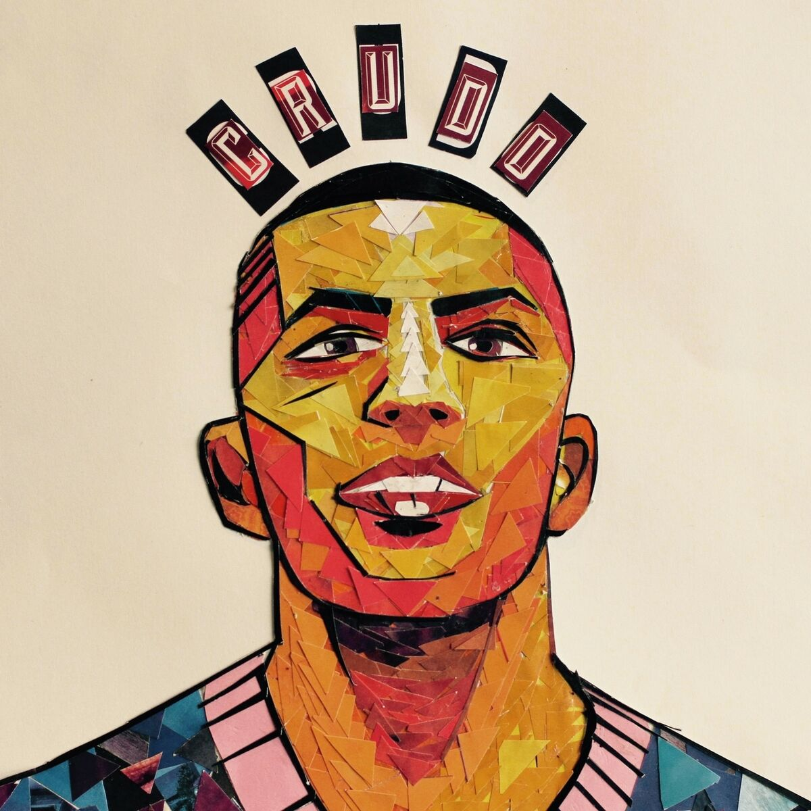
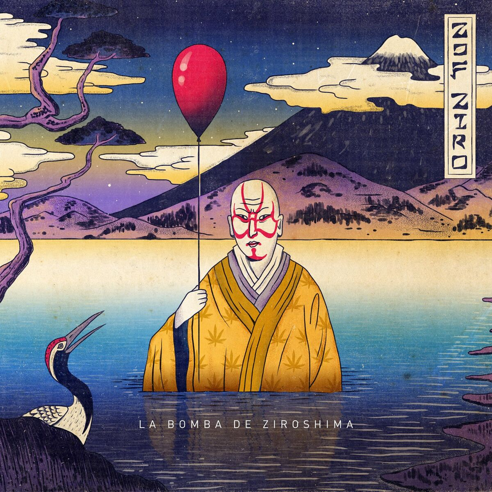
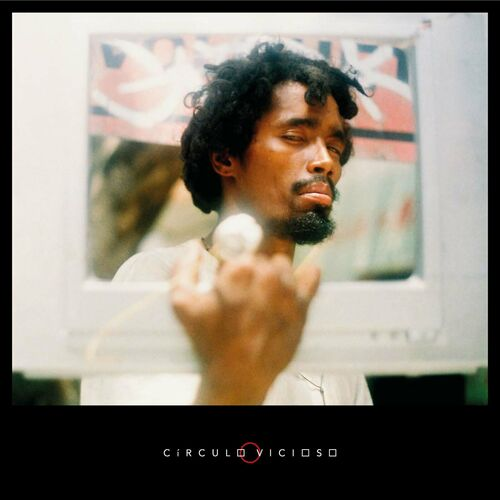
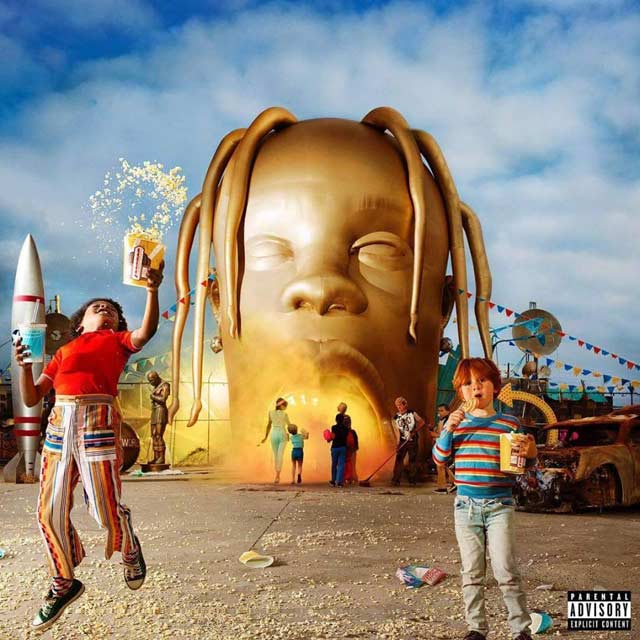
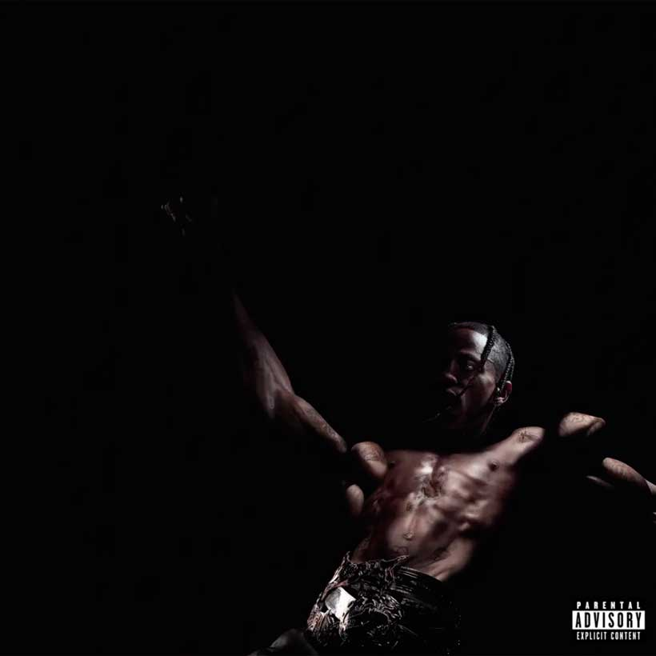
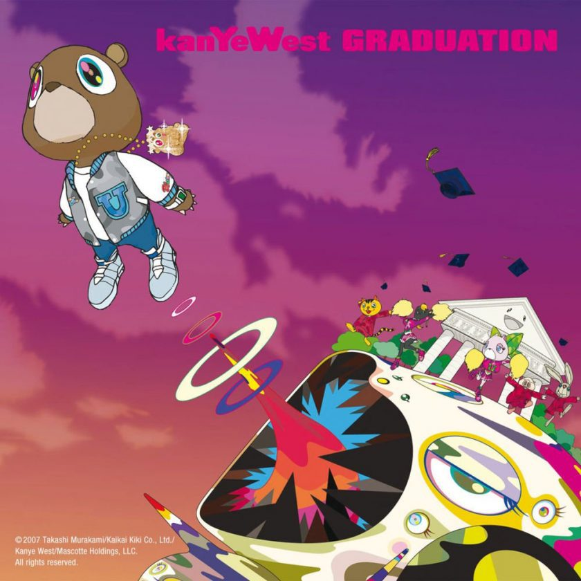
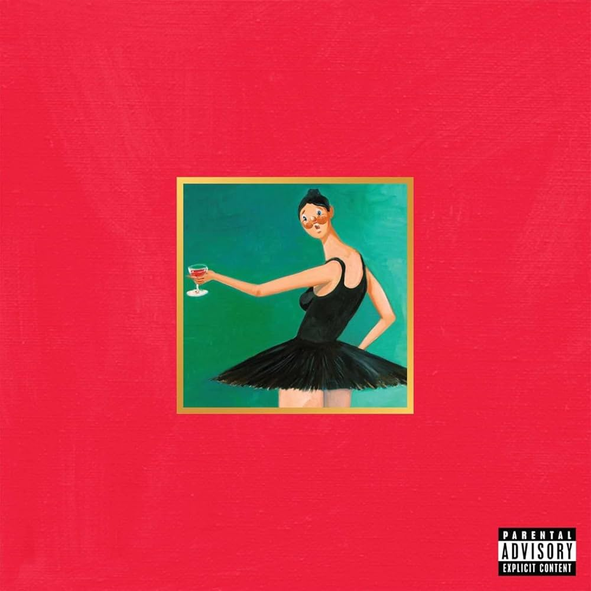

Moebiuz Studio
Mbz (Moebiuz Studio) es es un estudio de grabación casero fundado en 2009 por Sebastián Álvarez alias Zof-Ziro al que luego se incorporo Mateo Montaño tambien conocido como Granuja.
Es conocido por ser un espacio libre donde cualquier rapero puede grabar de manera gratuita.
El nombre del estudio, inspirado por el matemático August Möbius, simboliza el infinito y sus posibilidades. Aquí nacieron grupos como La Gra$a, integrado por Crudo Means Raw, Mañas Ru-fino, Métricas Frías, Zof-Ziro y Granuja. Moebiuz ha producido a varios artistas reconocidos como Rapiphero, Métricas Frías y Mañas Ru-Fino.
Manzanas a la vuelta
Escuchar en Spotify

A lo largo de las canciones, Doble Porción narra historias personales y colectivas que reflejan la realidad de muchos jóvenes en Medellín, retratando la dureza del barrio pero también la camaradería y el sentido de pertenencia. Musicalmente, el álbum se caracteriza por beats oscuros y letras profundas que invitan a reflexionar sobre la realidad social y emocional de los personajes que Doble Porción presenta.
Este álbum no solo es una colección de canciones, sino un testimonio de la vida en Medellín, ofreciendo una mirada honesta y sin adornos a las calles de la ciudad. Con "Manzanas a la vuelta", Doble Porción continúa consolidando su lugar en la escena del rap colombiano, destacándose por su autenticidad y capacidad para conectar con su audiencia a través de relatos poderosos y llenos de verdad.
Hubiera
Escuchar en Spotify

Hubiera, el álbum de Crudo Means Raw lanzado en 2023, es una obra que destaca por su exploración profunda de temas personales y sociales. Con una narrativa introspectiva, el álbum refleja las experiencias de vida del artista, combinando letras sinceras con una producción innovadora.
El título "Hubiera" sugiere un enfoque en las reflexiones sobre el pasado y las decisiones tomadas, abordando sentimientos de arrepentimiento, nostalgia y aprendizaje. Crudo Means Raw utiliza el álbum para explorar la complejidad de las emociones humanas y la lucha interna que acompaña a las decisiones y sus consecuencias.
Musicalmente, el álbum se caracteriza por un sonido crudo y auténtico, con una mezcla de beats melancólicos y agresivos que subrayan la intensidad de las letras. Cada pista ofrece una visión única del mundo interior del artista, con un enfoque en la introspección y la autoevaluación.
La Gra$a
Escuchar en Spotify
De la grasa, el álbum de Moebiuz lanzado en 2022, es una obra que encapsula la esencia del rap independiente colombiano con un estilo único y auténtico. A través de sus pistas, el álbum ofrece una exploración profunda de temas relacionados con la vida en las calles, la lucha personal y las experiencias de la vida cotidiana.
El título "De la grasa" hace referencia a las realidades duras y no glamorizadas del entorno urbano, abordando la vida desde una perspectiva cruda y honesta. Las letras del álbum son una mezcla de introspección personal y comentarios sociales, reflejando la realidad de los barrios y el impacto de las circunstancias en la vida del artista.
Musicalmente, el álbum destaca por sus beats pesados y atmosféricos, complementados con un flow sólido y emotivo. Moebiuz combina ritmos intensos con letras profundas para crear una experiencia auditiva que es tanto poderosa como reflexiva.
La bomba de ziroshima
Escuchar en Spotify

La Bomba, el álbum de Ziroshima lanzado en 2024, es una explosiva combinación de ritmos urbanos y letras incisivas que capturan la energía y la pasión del rap contemporáneo. Con una propuesta fresca y vibrante, Ziroshima ofrece una visión única de su mundo a través de este álbum.
El título "La Bomba" sugiere una explosión de ideas y emociones, y el álbum vive a la altura de esa promesa. Cada pista es una mezcla dinámica de beats contundentes y letras cargadas de actitud, explorando temas que van desde la autoafirmación y el empoderamiento hasta la crítica social y la introspección personal.
Musicalmente, "La Bomba" se destaca por su producción innovadora, que fusiona elementos de rap clásico con influencias modernas y experimentales. Ziroshima demuestra su habilidad para manejar una variedad de estilos y sonidos, creando un álbum que es tanto enérgico como reflexivo.
Circulo Vicioso
Escuchar en Spotify

Círculo Vicioso, el álbum de Granuja lanzado en 2023, es una profunda inmersión en las complejidades de la vida urbana y las luchas personales. Con un enfoque lírico y una producción refinada, el álbum explora los temas recurrentes de la autodestrucción, la redención y la lucha por romper ciclos negativos.
El título "Círculo Vicioso" refleja la temática central del álbum, que gira en torno a los patrones repetitivos de comportamiento y las dificultades para escapar de ellos. Granuja aborda estos temas con una mezcla de introspección y crítica social, ofreciendo una visión honesta de los desafíos personales y las realidades del entorno en el que vive.
Musicalmente, el álbum combina beats melancólicos con ritmos enérgicos, creando un contraste que resalta las luchas internas y las aspiraciones del artista. Las letras son intensas y evocadoras, capturando la esencia de la lucha personal y la búsqueda de un cambio.
Aubrey Drake Graham
Drake, cuyo nombre real es Aubrey Drake Graham, es un artista canadiense multifacético conocido principalmente por su trabajo en el rap y el R&B. Nacido el 24 de octubre de 1986 en Toronto, Ontario, ha sido una figura influyente en la música moderna desde el inicio de su carrera.
Drake se convirtió en uno de los artistas más exitosos y reconocidos de la última década. Su estilo musical combina elementos de rap, R&B, y música pop, creando un sonido distintivo que ha sido aclamado tanto por críticos como por fans. Ha lanzado varios álbumes exitosos, como Thank Me Later, Take Care, Nothing Was the Same, Views, Scorpion, y Certified Lover Boy. Su habilidad para combinar letras introspectivas con ritmos pegajosos ha resonado con una amplia audiencia.
Take Care
Escuchar en Spotify
Take Care, lanzado en 2011, es el segundo álbum de estudio de Drake y una obra que consolidó su lugar en la cima de la música hip-hop y R&B. Este álbum es ampliamente considerado como un proyecto introspectivo y emocional, en el que Drake explora la complejidad de las relaciones, la fama, y el éxito.
El álbum aborda temas como el amor, el desamor, la soledad, y la presión que conlleva la fama. A lo largo de las canciones, Drake se muestra vulnerable, reflexionando sobre sus inseguridades, el peso de la responsabilidad, y las dificultades de mantener conexiones genuinas en un mundo superficial. La producción, a cargo de Noah "40" Shebib y otros colaboradores, es atmosférica y melancólica, complementando perfectamente las letras profundas y sinceras de Drake.
Canciones como "Marvins Room" y "The Real Her" profundizan en la angustia emocional y la introspección, mientras que tracks como "Take Care" (con Rihanna) y "HYFR (Hell Ya F***ing Right)" muestran una mezcla de sentimientos que oscilan entre el arrepentimiento y la celebración. El álbum también cuenta con colaboraciones con artistas como The Weeknd, Lil Wayne, Nicki Minaj, y Rick Ross, lo que añade variedad y dinamismo a la obra.
More Life
Escuchar en Spotify

More Life, lanzado en 2017, es un proyecto único de Drake que él mismo describió como una "playlist", más que un álbum tradicional. Este trabajo destaca por su diversidad musical, fusionando géneros como el hip-hop, el R&B, el dancehall, el afrobeat, y el grime, mostrando la versatilidad artística de Drake y su habilidad para navegar por diferentes sonidos y culturas.
El álbum retrata la vida de Drake en un momento de su carrera en el que estaba explorando nuevas influencias y expandiendo su alcance global. More Life es una celebración de la vida y un reflejo de su evolución personal y profesional. A través de las canciones, Drake aborda temas como la fama, las relaciones, la traición, y la búsqueda de la felicidad, todo mientras mantiene una atmósfera que va desde lo introspectivo hasta lo festivo.
Tracks como "Passionfruit" y "Get It Together" exploran ritmos más suaves y bailables, influenciados por el house y el afrobeat, mientras que canciones como "Gyalchester" y "Portland" mantienen el estilo más tradicional de rap de Drake. El proyecto también incluye colaboraciones con artistas como Giggs, Jorja Smith, Quavo, Travis Scott, y Kanye West, lo que añade una variedad de voces y estilos a la playlist.
Dark Lane Demo Tapes
Escuchar en Spotify
Dark Lane Demo Tapes, lanzado en 2020, es un mixtape de Drake que reúne una colección de canciones que fueron filtradas, estrenadas previamente, o descartadas de proyectos anteriores. Este trabajo ofrece una mirada a las facetas más sombrías y experimentales de Drake, reflejando un estado de ánimo introspectivo y melancólico que encaja perfectamente con el clima global de incertidumbre en el momento de su lanzamiento.
El mixtape retrata a un Drake que está navegando por temas como la soledad, la nostalgia, la traición, y la autoafirmación. Canciones como "Chicago Freestyle" y "When to Say When" abordan estos temas con un enfoque lírico y melódico, mientras que tracks como "Toosie Slide" combinan un ritmo pegajoso con letras que invitan al baile, mostrando la habilidad de Drake para crear éxitos virales.
Musicalmente, Dark Lane Demo Tapes fusiona elementos de trap, R&B, y hip-hop con un tono oscuro y minimalista. Este proyecto destaca por su diversidad en estilos y emociones, desde la agresividad en "D4L" con Future y Young Thug, hasta la introspección en "Losses". También incluye colaboraciones con artistas como Playboi Carti, Fivio Foreign, y Chris Brown, lo que añade diferentes texturas al mixtape.
Jacques Berman Webster II
Travis Scott, cuyo nombre real es Jacques Berman Webster II, es un rapero, cantante, y productor musical estadounidense nacido el 30 de abril de 1991 en Houston, Texas. Conocido por su estilo innovador y su enfoque en la producción musical, Scott se ha destacado en la escena del hip-hop y el trap moderno.
Scott comenzó su carrera musical a una edad temprana, pero alcanzó la fama con el lanzamiento de su mixtape Owl Pharaoh en 2013 y Rodeo en 2015. Su primer álbum de estudio, Rodeo, fue aclamado por su mezcla de trap, hip-hop, y elementos experimentales, y estableció a Scott como una figura influyente en la música contemporánea. Su segundo álbum, Birds in the Trap Sing McKnight (2016), continuó su éxito y solidificó su reputación.
Uno de sus álbumes más destacados es Astroworld (2018), que recibió elogios por su producción innovadora y su capacidad para crear una experiencia inmersiva. El álbum incluye éxitos como "Sicko Mode" y "Butterfly Effect" y ha sido un hito en la carrera de Scott. Además, ha colaborado con una variedad de artistas y ha participado en proyectos con nombres destacados en la industria musical.
Birds in the Trap Sing McKnight
Escuchar en Spotify

Birds in the Trap Sing McKnight, lanzado en 2016, es el segundo álbum de estudio de Travis Scott y una obra que refleja su capacidad para fusionar trap, hip-hop y sonidos experimentales. Este álbum continúa la exploración musical de Scott, consolidando su estilo distintivo y su influencia en la música contemporánea.
El álbum presenta una mezcla de ritmos atmosféricos y letras introspectivas, explorando temas como la fama, la soledad, el amor, y la autoafirmación. A lo largo de las canciones, Travis Scott ofrece una visión de su vida personal y profesional, con un enfoque en las emociones que surgen de la experiencia de ser un artista en ascenso.
Tracks como "Antidote" y "Goosebumps" son ejemplos de su habilidad para crear éxitos pegajosos y vibrantes, mientras que canciones como "Through the Late Night" y "Beibs in the Trap" demuestran su capacidad para producir sonidos más melódicos y experimentales. El álbum también incluye colaboraciones con una variedad de artistas destacados, como André 3000, Kendrick Lamar, and André 3000, que añaden profundidad y variedad a la producción.
Musicalmente, Birds in the Trap Sing McKnight se destaca por su producción envolvente y su habilidad para crear una atmósfera única. Los beats son a menudo oscuros y espaciales, complementados por el estilo vocal distintivo de Scott, que varía desde rap hasta melodías más suaves.
Astroworld
Escuchar en Spotify

Astroworld, lanzado en 2018, es el tercer álbum de estudio de Travis Scott y una de sus obras más aclamadas y ambiciosas. El álbum es un homenaje al parque de atracciones Six Flags Astroworld en Houston, Texas, que fue cerrado en 2005, y a la nostalgia que evoca ese lugar en la vida del artista.
Astroworld retrata un viaje sensorial y emocional a través de las experiencias de Travis Scott, mezclando temas como la fama, la pérdida, el hedonismo, y la introspección. El álbum se presenta como un viaje en una montaña rusa, lleno de altibajos emocionales y sonoros, que refleja la complejidad de la vida moderna y la psique del artista.
Musicalmente, el álbum es un mosaico de estilos que fusiona trap, hip-hop, R&B, y elementos psicodélicos, creando un paisaje sonoro envolvente. Canciones como "SICKO MODE", una de las más populares del álbum, destacan por su estructura innovadora y su cambio abrupto de ritmos, mientras que "STARGAZING" y "STOP TRYING TO BE GOD" muestran el lado más introspectivo y melódico de Scott.
El álbum cuenta con colaboraciones de alto nivel con artistas como Drake, The Weeknd, Frank Ocean, Kid Cudi, y Pharrell Williams, entre otros, lo que añade una rica diversidad de voces y estilos a la obra. Cada pista fluye de manera que crea una experiencia auditiva continua, similar a un recorrido por un parque temático.
Utopia
Escuchar en Spotify

Utopia, lanzado en 2023, es el cuarto álbum de estudio de Travis Scott y uno de los proyectos más esperados en la música contemporánea. Este álbum es una exploración ambiciosa de los sueños, la realidad y las aspiraciones humanas, encapsulando el deseo de alcanzar un estado idealizado, o una "utopía", en medio de un mundo lleno de caos y contradicciones.
Retrata la búsqueda personal de Travis Scott por encontrar un equilibrio entre el hedonismo y la reflexión, la fama y la autenticidad, lo real y lo imaginario. A lo largo del álbum, Scott juega con estos dualismos, ofreciendo una experiencia auditiva que oscila entre lo introspectivo y lo expansivo, lo oscuro y lo luminoso.
Musicalmente, el álbum es una fusión de géneros que incluye trap, hip-hop, R&B, y elementos experimentales, todo mientras mantiene la producción de alta calidad característica de Scott. Canciones como "HYAENA" y "MODERN JAM" destacan por sus ritmos innovadores y sus estructuras complejas, mientras que pistas como "MY EYES" y "LOST FOREVER" exploran temas más profundos y melancólicos. La producción de Utopia es rica en detalles, con capas de sonido que invitan a una experiencia inmersiva.
El álbum cuenta con colaboraciones de grandes artistas como Beyoncé, The Weeknd, SZA, Drake, y Future, quienes aportan sus estilos únicos y añaden diversidad a la paleta sonora del proyecto. A través de estas colaboraciones, Utopia se convierte en un tapiz de voces e influencias que enriquecen la narrativa del álbum.
Kanye West
Kanye West, nacido el 8 de junio de 1977 en Atlanta, Georgia, y criado en Chicago, Illinois, es uno de los artistas más influyentes y controvertidos de la música contemporánea. Es un rapero, productor musical, diseñador de moda, y empresario que ha dejado una marca indeleble en la cultura pop y la industria del entretenimiento.
West comenzó su carrera como productor en la década de 1990, trabajando con artistas como Jay-Z, Ludacris, y Alicia Keys. Su habilidad para crear beats innovadores y su estilo de producción basado en el uso de samples le ganaron reconocimiento en la industria. Sin embargo, Kanye no se conformó con ser solo un productor y lanzó su carrera como rapero en 2004 con su álbum debut The College Dropout, que fue aclamado por la crítica y lo catapultó al estrellato.
A lo largo de su carrera, Kanye West ha lanzado una serie de álbumes icónicos, incluyendo Late Registration (2005), Graduation (2007), 808s & Heartbreak (2008), My Beautiful Dark Twisted Fantasy (2010), y Yeezus (2013). Cada uno de estos álbumes ha mostrado su capacidad para reinventarse y empujar los límites del hip-hop, explorando una amplia gama de estilos y temas, desde la autoexploración y la lucha interna hasta la crítica social y la política.
Además de su música, Kanye West es conocido por su incursión en la moda, especialmente con su marca Yeezy, que ha tenido un impacto significativo en la moda urbana y de alta costura. Sus colaboraciones con Adidas para lanzar las zapatillas Yeezy han sido enormemente exitosas, consolidando su posición como un influyente diseñador de moda.
Graduation
Escuchar en Spotify

Graduation, lanzado en 2007, es el tercer álbum de estudio de Kanye West y una pieza clave en la evolución del hip-hop contemporáneo. Este álbum completa la trilogía que comenzó con The College Dropout y continuó con Late Registration, pero con un enfoque más futurista y electrónico, reflejando el crecimiento artístico de Kanye y su ambición por expandir los límites del género.
El álbum retrata el viaje de Kanye hacia el éxito y la superación personal, abordando temas como la fama, la perseverancia, la soledad, y la lucha por mantener la autenticidad en un mundo lleno de superficialidad. A través de letras introspectivas y beats innovadores, Kanye se muestra a la vez confiado y vulnerable, destacando su compleja relación con el éxito y el reconocimiento.
Musicalmente, Graduation se distingue por su fusión de hip-hop con influencias de la música electrónica, el rock, y el pop. Kanye experimenta con sintetizadores y melodías grandiosas, lo que se evidencia en tracks como "Stronger", que samplea "Harder, Better, Faster, Stronger" de Daft Punk, y "Flashing Lights", una de las canciones más melódicas y atmosféricas del álbum. Estas canciones, junto con éxitos como "Good Life" y "Can't Tell Me Nothing", capturan el espíritu triunfal y festivo del álbum.
Graduation también refleja la visión global de Kanye, quien se inspiró en la música y la cultura más allá de las fronteras estadounidenses, creando un sonido más universal. Este enfoque contribuyó a la ruptura de las barreras entre el hip-hop y otros géneros, ayudando a popularizar el rap en audiencias más amplias.
My Beautiful Dark Twisted Fanstasy
Escuchar en Spotify

My Beautiful Dark Twisted Fantasy, lanzado en 2010, es ampliamente considerado como una obra maestra en la discografía de Kanye West y uno de los álbumes más influyentes de la música contemporánea. Este álbum es una exploración audaz de la fama, el poder, la decadencia, y la redención, todo envuelto en una producción opulenta y multifacética que desafía las convenciones del hip-hop.
El álbum retrata la compleja psique de Kanye West en un momento crítico de su vida, cuando enfrentaba un intenso escrutinio público y luchaba con las consecuencias de su propio éxito. A través de letras profundamente personales, Kanye explora su ego, sus inseguridades, sus excesos, y sus arrepentimientos, creando un relato que es a la vez grandioso y vulnerable.
Musicalmente, My Beautiful Dark Twisted Fantasy es un mosaico sonoro que fusiona elementos de hip-hop, rock, soul, R&B, y música clásica, con una producción que es tanto exuberante como detallada. Canciones como "POWER", "Runaway", y "All of the Lights" destacan por sus arreglos complejos y sus letras introspectivas, que reflejan el conflicto interno de Kanye entre su ambición y su autocrítica.
El álbum también cuenta con una lista impresionante de colaboradores, incluyendo a Jay-Z, Kid Cudi, Nicki Minaj, Bon Iver, y más, quienes aportan una variedad de voces y estilos que enriquecen la narrativa y la textura del proyecto. Cada pista se siente como una pieza cuidadosamente elaborada de un rompecabezas más grande, contribuyendo a una experiencia auditiva cohesiva y envolvente.
My Beautiful Dark Twisted Fantasy no solo es un reflejo de la vida de Kanye West, sino también una crítica a la cultura de la celebridad y al exceso que define la era moderna. El álbum aborda la tensión entre la gloria y la autodestrucción, presentando a Kanye como un narrador tanto épico como trágico.
Donda
Escuchar en Spotify

Donda, lanzado en 2021, es el décimo álbum de estudio de Kanye West y una obra profundamente personal que rinde homenaje a su madre, Donda West, quien falleció en 2007. Este álbum es una exploración de la fe, el dolor, la redención, y la lucha interna, todo mientras Kanye busca reconciliar su fama con su espiritualidad y sus responsabilidades personales.
El álbum retrata la complejidad emocional de Kanye mientras navega por su duelo y su relación con Dios. A través de 27 pistas, Kanye utiliza el álbum como una plataforma para reflexionar sobre su vida, sus fracasos, sus triunfos, y su búsqueda de significado y propósito. Las letras abordan temas como la pérdida, el arrepentimiento, la redención, y la familia, presentando a Kanye en un estado de introspección profunda.
Musicalmente, Donda es un mosaico de géneros, mezclando elementos de gospel, hip-hop, trap, y música electrónica. El álbum cuenta con una producción grandiosa y a menudo minimalista, con coros que evocan una atmósfera celestial y beats que reflejan tanto la tensión como la esperanza. Canciones como "Jail", "Hurricane", y "Come to Life" destacan por su emotividad y su estructura cinematográfica, mientras que temas como "Jesus Lord" y "No Child Left Behind" profundizan en la espiritualidad y la redención.
Donda también es conocido por su extensa lista de colaboradores, que incluye a artistas como Jay-Z, The Weeknd, Lil Baby, Kid Cudi, Travis Scott, y muchos otros. Cada artista aporta su estilo único al proyecto, añadiendo capas de diversidad y textura al álbum.
El álbum también es significativo por su proceso de lanzamiento, que incluyó varias sesiones de escucha en estadios y cambios de última hora, reflejando la naturaleza perfeccionista y experimental de Kanye. Donda es más que un simple álbum; es una experiencia artística que encapsula la complejidad de Kanye como artista y como ser humano.